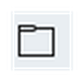

ثلاث عمليات تسويها كل يوم تقريبًا عند استخدام Word: فتح مستند سبق أن حفظته، حفظ عملك، وإغلاقه عند الانتهاء.
فتح (Open)
تستخدمها لفتح مستند سبق أن حفظته على جهازك، لتكمل العمل عليه.
مثال: كتبت تقريرًا أمس وتبي تكمله اليوم؟ استخدم "فتح" وابحث عن الملف.
حفظ (Save)
تحفظ كل التعديلات التي أجريتها على المستند، حتى لا تفقد عملك.
مثال: بعد كل فقرة تكتبها تقريبًا، اضغط "حفظ" حتى لا تخسر شيئًا لو حدث خطأ مفاجئ.

إغلاق (Close)
تغلق المستند الحالي فقط (البرنامج نفسه يبقى مفتوحًا). إذا كان فيه تعديلات غير محفوظة، سيسألك Word إذا تريد حفظها أولًا.
مثال: خلصت من التقرير؟ احفظه أولًا، ثم اضغط "إغلاق" للانتقال لملف آخر.
هل تعلم؟
لو حاولت تغلق مستندًا فيه تعديلات غير محفوظة، يعرض لك Word رسالة تحذير تسألك "هل تريد حفظ التغييرات؟" — هذا يحميك من فقدان عملك بالخطأ.